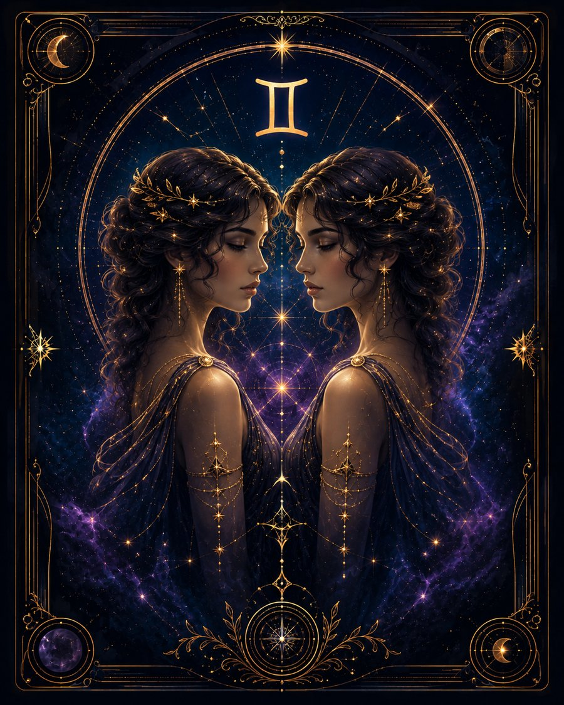

В двух словах
«Мне нужно понять, что происходит вокруг».
Какой это человек
Близнецы познают мир через контакт и информацию. Разговоры, чтение, новости, поездки, новые знакомства и обмен мнениями помогают им чувствовать себя живыми. Они быстро учатся, легко переключаются и часто имеют сразу несколько интересов.
Что им движет
Интерес. Если им интересно — они схватывают всё на лету. Если скучно — удержать их внимание трудно.
Сильные стороны
Любознательность, гибкость, коммуникабельность, быстрая адаптация, умение связывать людей и информацию, способность объяснять сложное простыми словами.
Слабые стороны
Разбросанность, суетливость, недостаток концентрации, привычка начинать несколько дел одновременно.
В отношениях
Очень важен разговор. Им нужен партнёр, с которым можно обмениваться мыслями, смеяться и постоянно узнавать что-то новое.
В работе и деньгах
Подходят сферы информации, обучения, торговли, продаж, посредничества, языков, медиа, интернета и переговоров.
Когда всё плохо
Суетятся, хватаются за новые впечатления и используют их как способ не разбираться с серьёзной проблемой.
Главное внутреннее противоречие
Хотят знать всё, но настоящая глубина требует отказаться хотя бы на время от десятка других интересов.
Это обобщённое описание солнечного знака, а не полный портрет человека. В реальной натальной карте характер зависит не только от Солнца, но и от других факторов.